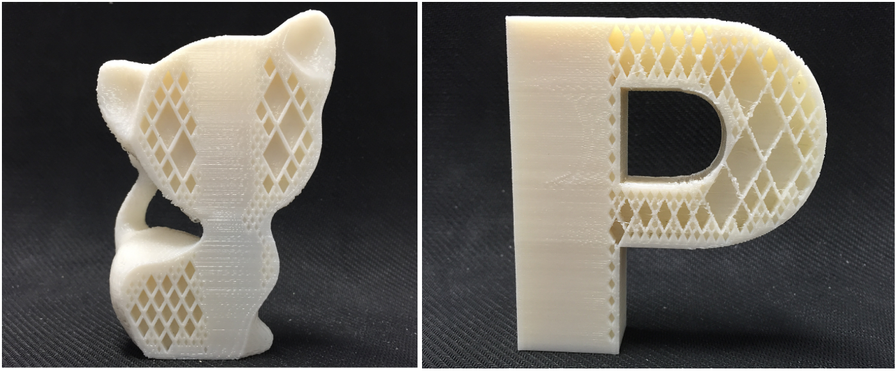

Self-Supporting Rhombic Infill Structures for
Additive Manufacturing
Computer-Aided Design (CAD), 2016
| Jun Wu | Charlie C.L. Wang | Xiaoting Zhang | Rüdiger Westermann |
| now at TU Delft | TU Delft, CUHK | CUHK | TU Munich |

Abstract
Recent work has demonstrated that the interior material layout of a 3D model can be designed to make a fabricated replica satisfy application-specific demands on its physical properties, such as resistance to external loads. A widely used practice to fabricate such models is by layer-based additive manufacturing (AM), which however suffers from the problem of adding and removing interior supporting structures. In this paper, we present a novel method for generating application-specific infill structures on rhombic cells so that the resultant structures can automatically satisfy manufacturing requirements on overhang-angle and wall-thickness. Additional supporting structures can be avoided entirely in our framework. To achieve this, we introduce the usage of an adaptive rhombic grid, which is built from an input surface model. Starting from the initial sparse set of rhombic cells, via numerical optimization techniques an objective function can be improved by adaptively subdividing the rhombic grid and thus adding more walls in cells. We demonstrate the effectiveness of our method for generating interior designs in the applications of improving mechanical stiffness and static stability.Related Projects
Infill Optimization for Additive Manufacturing -- Approaching Bone-like Porous Structures
A System for High-Resolution Topology Optimization
Download
 |
Paper 5.8 MB |
 |
3D Model 2.3 MB |
Bibtex
@article{Wu2016CAD,
author = "Jun Wu and Charlie C.L. Wang and Xiaoting Zhang and R\"udiger Westermann",
title = "Self-supporting rhombic infill structures for additive manufacturing",
journal = "Computer-Aided Design",
volume = "80",
number = "",
pages = "32 - 42",
year = "2016",
note = "",
issn = "0010-4485",
doi = "http://dx.doi.org/10.1016/j.cad.2016.07.006",
}